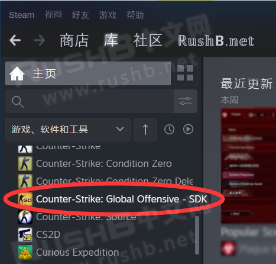

CSGO RushB中文网
CSGO RushB中文网
本文将介绍CSGO SDK工具（软件开发工具包）之一的Model Viewer（模型查看器）的基础使用教程，绝大部分CSGO游戏内模型都可以用这款工具查看，包括勋章、探员、武器等大量模型。如果你是社区创作者，也可以用Model Viewer查看制作的内容。
在CSGO中，模型文件后缀为“.mdl”并且被封装在VPK文件里，无法直接查看，所以需要用到Model Viewer。
*饰品皮肤、印花贴纸无法查看，需要解包VPK文件，方法较麻烦这里就不介绍了。
一、下载CSGO SDK
只要你买过CSGO，就可以直接下载CSGO SDK，下载方法：
打开Steam客户端——库——在左边栏的游戏/软件/工具下拉框勾选“工具”，另外右边的播放按钮要取消才会显示未安装的游戏/工具，如图：
然后在下方列表中找到“Counter-Strike Global Offensive – SDK”并安装即可：
*注意：SDK要和CSGO安装在同一路径，否则无法正常运行。
二、使用教程
安装完成后，双击打开，如图，其中Model Viewer就是我们要用的模型查看工具，双击打开：
打开模型：
在Model Viewer窗口中，点击“File”——“Load Model”即可打开文件夹选择要查看的模型：
注意，文件夹路径默认模型（models）文件夹，以勋章为例，我们找到“inventory_items”，如图，这里包含了所有CSGO勋章模型等其他文件：
接着，我们打开其中的10年老兵硬币，文件名为“10_year_coin.mdl”
打开之后便可以看到10年老兵硬币模型：
模型操作方法：
旋转模型：光标放在模型上并按住左键，之后移动鼠标即可旋转模型。
放大/缩小模型：光标放在模型上并按住右键，向外移动鼠标可放大，向内则是缩小。
移动模型：键盘按住Shift键，光标放到模型上按住左键，移动鼠标即可移动模型。
改变光源：键盘按住Ctrl键，按住鼠标左键并移动可改变光照方向。
几个模型文件路径：
勋章：\inventory_items
探员：\player\custom_player\legacy
手臂及武器：\weapons
武器箱：\props\crates
基本介绍就到这里，除此之外Model Viewer还有许多功能，以及更多模型，具体请自行慢慢尝试体验。


{kind=link}
{kind=link}
{kind=link}
{kind=link}
{kind=link}
{kind=link}
{kind=link}